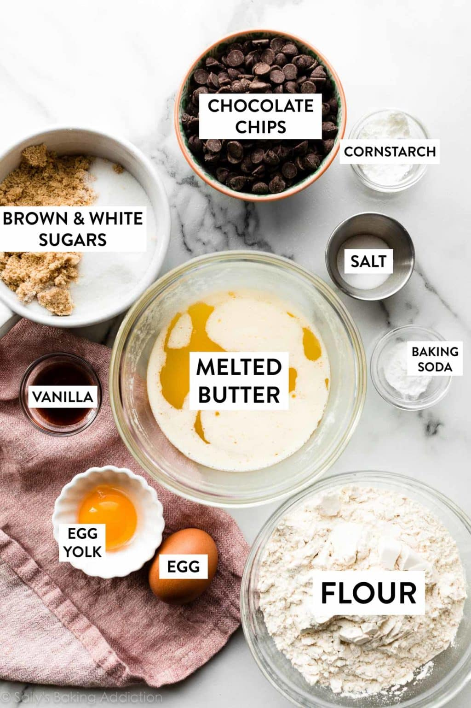
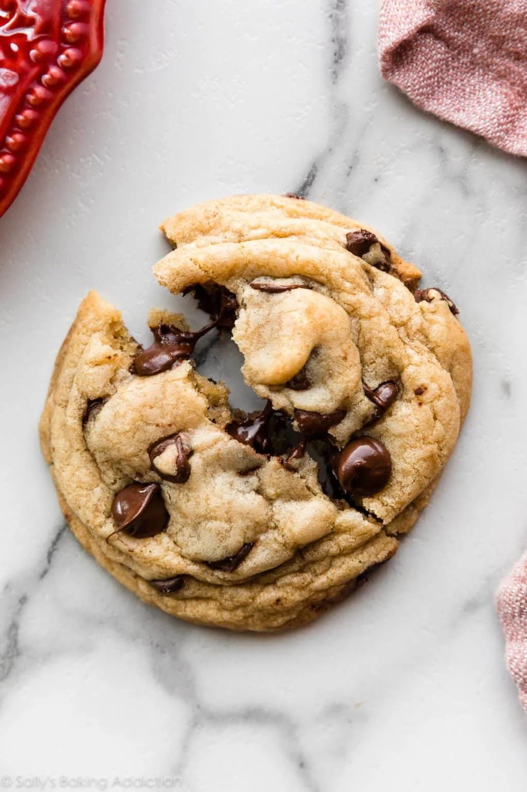

Home
The Myth, The Legend, The Worlds Greatest Chocolate Chip Cookie
Have you ever bit into a chocolate chip cookie, and thought to yourself,
"This just isn't it."? Fear no more, because I am here to take that thought,
and make it so nonexistent, that you will in fact never come across it again.
By following these simple steps below, you will create a cookie so desirable, so mouthwatering.
that it really should be illegal it even exists. I've known people who, maybe not proud of it, but
have stated they would indeed sell their children for such cookie.
Ingredients

- 2 and 1/4 cups (280g) all-purpose flour (spooned and leveled)
- 1 teaspoon baking soda
- 1 and 1/2 teaspoons cornstarch*
- 1/2 teaspoon salt
- 3/4 cup (170g) unsalted butter, melted and cooled 5 minutes*
- 3/4 cup (150g) packed light or dark brown sugar
- 1/2 cup (100g) granulated sugar
- 1 large egg +1 egg yolk, at room temperature
- 2 teaspoons pure vanilla extract
- 1 and 1/4 cups (225g) semi-sweet chocolate chips or chocolate chunks
